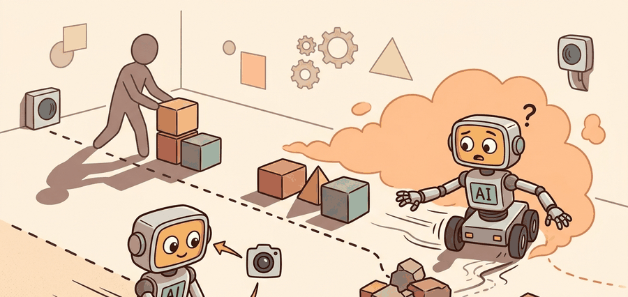

A Careful Control Loop

Behavior cloning is the supervised-learning baseline for imitation: fit expert actions from expert observations, then ask whether the learned policy stays competent after it starts creating its own states. The section makes the distribution-shift problem mathematical and testable.
This section develops the technical contract for behavior cloning; the distribution-shift problem into a usable mental model. First we define the object of study, then we connect it to the agent loop, then we test it with a compact implementation.
The key question in Behavior cloning; the distribution-shift problem is practical: what must the agent know, what can it observe, what action is available, and what evidence shows that the action worked under the stated conditions?
A representation earns its place when it changes the measurable action interface. In behavior cloning; the distribution-shift problem, the reader should keep asking which decision becomes easier, safer, or more reliable.
Theory
For Behavior cloning; the distribution-shift problem, the practical design rule is to make the interface inspectable before optimization begins: inputs, outputs, units, latency, bounds, and failure labels should all be visible in the saved artifact.
The mechanism in Behavior cloning; the distribution-shift problem is the contract between representation and action. Name what enters the module, what leaves it, which assumptions make that transformation valid, and which log would reveal a bad handoff.
Worked Example
For Behavior cloning; the distribution-shift problem, keep one concrete rollout in view. A sensor reading becomes an estimate, the estimate constrains an action, the action changes the world, and the next observation confirms or contradicts the assumption. The section's idea is useful only if it improves that loop.
from pathlib import Path
dataset_root = Path("robot_demos")
for episode in sorted(dataset_root.glob("episode_*")):
print("inspect", episode.name)
print("next step: convert demonstrations to the LeRobotDataset format")Expected output: the printed trace for Behavior cloning; the distribution-shift problem should expose the method configuration, the measured evidence field, and the failure label. If one of those fields is missing or unchanged under the perturbation, the example is not yet an evaluation artifact.
Use robomimic or LeRobot to train the supervised policy, then run closed-loop rollouts with identical resets, seeds, camera views, and action scaling so imitation loss and task success can be interpreted together.
Behavior Cloning Objective And Covariate Shift
Behavior cloning turns imitation into supervised learning. Given expert pairs $\mathcal{D}_E = \{(o_i, a_i^E)\}_{i=1}^N$, the learner fits $\pi_\theta$ by minimizing an action loss under the expert visitation distribution:
$$\min_\theta \; \mathbb{E}_{(o,a^E) \sim \mathcal{D}_E}\left[\ell\left(\pi_\theta(o), a^E\right)\right].$$
For continuous robot actions, $\ell$ is often mean squared error or negative log likelihood under a Gaussian policy. For discrete actions, it is usually cross entropy. The hidden assumption is stronger than it looks: test-time observations must remain close to the expert observations used during training. Once the learned policy makes an error, it can visit observations that the dataset barely covers, and the next prediction is made out of distribution.
If the policy has a per-step error rate $\epsilon$ under expert states, a horizon-$T$ rollout can accumulate roughly $O(T^2\epsilon)$ cost under naive behavior cloning because early mistakes change the future state distribution. This is the central reason a high validation score on demonstration frames can still produce poor closed-loop robot behavior.
Code Fragment 3 computes a tiny behavior-cloning loss and then shows how a one-step position error changes the next observation region.
# Compute a behavior-cloning loss and expose the distribution-shift issue.
# The second line shows how a small action error moves the next observation.
import numpy as np
expert_action = np.array([0.10, 0.00])
policy_action = np.array([0.07, 0.04])
bc_loss = np.mean((policy_action - expert_action) ** 2)
next_observation_error_cm = np.linalg.norm(policy_action - expert_action) * 100
print(f"BC loss: {bc_loss:.4f}")
print(f"next observation offset: {next_observation_error_cm:.1f} cm")next observation offset: 5.0 cm
A serious behavior-cloning report separates held-out episodes from held-out tasks. Held-out episodes test interpolation within the same task family; held-out tasks test whether the policy learned a reusable sensorimotor pattern rather than memorizing reset poses, object identities, or operator timing.
Practical Recipe
- Write the observation, action, and success metric before choosing a model.
- Build a baseline that is simple enough to debug by inspection.
- Add the library implementation only after the baseline behavior is understood.
- Record failures as structured cases: perception error, state error, planning error, control error, or evaluation error.
- Run at least one perturbation test before trusting the result.
The common mistake in Behavior cloning; the distribution-shift problem is to celebrate the component score before checking the closed-loop handoff. The failure usually appears at the boundary: stale state, wrong frame, delayed action, saturated actuator, or metric that ignores the real task cost.
A robot learning engineer applying behavior cloning; the distribution-shift problem starts by recording the robot body, camera setup, action units, operator source, and split policy for every episode. That record makes it possible to compare LeRobot with a baseline without changing the task definition midstream.
Treat behavior cloning; the distribution-shift problem like a control-room label. If the label does not tell a future debugger what moved, what sensed, or what failed, it is decoration rather than engineering knowledge.
For Behavior cloning; the distribution-shift problem, treat frontier claims as hypotheses until they expose enough detail to reproduce the result: data boundary, embodiment, controller interface, evaluation panel, and failure cases.
Can you name the observation, state estimate, action, success metric, and most likely failure mode for behavior cloning; the distribution-shift problem? If not, the system boundary is still too vague.
Behavior cloning; the distribution-shift problem becomes useful when it is tied to a closed-loop contract. In this Part V section on Behavior cloning; the distribution-shift problem, the contract names the observation stream, the state estimate, the action representation, the timing budget, and the evaluation artifact. Without that contract, a model can look capable in a notebook while failing the first time a sensor drops a frame or a controller saturates.
For Behavior cloning; the distribution-shift problem, separate the conceptual claim, the systems claim, and the evidence claim. A plausible mechanism, a clean interface, and a closed-loop result are different claims; the section should keep their evidence separate.
| Tool or Library | Role in the Topic | Builder Advice |
|---|---|---|
| Gymnasium | Behavior cloning; the distribution-shift problem | Use it when the experiment needs a maintained implementation rather than custom glue. |
| PettingZoo | Behavior cloning; the distribution-shift problem | Use it when the experiment needs a maintained implementation rather than custom glue. |
| ROS 2 | Behavior cloning; the distribution-shift problem | Use it when the experiment needs a maintained implementation rather than custom glue. |
| MuJoCo | Behavior cloning; the distribution-shift problem | Use it when the experiment needs a maintained implementation rather than custom glue. |
| LeRobot | Behavior cloning; the distribution-shift problem | Use it when the experiment needs a maintained implementation rather than custom glue. |
For Behavior cloning; the distribution-shift problem, start with a small baseline that logs inputs, outputs, units, timestamps, and termination conditions before moving to Gymnasium or PettingZoo. The library run should keep the same artifact schema, so the comparison remains a same-task evaluation.
- Write a one-paragraph task contract with observation, action, success, and failure fields.
- Start with the smallest simulator, dataset, or wrapper that exposes the task contract faithfully.
- Run one deterministic smoke test and one perturbation test before scaling.
- Save a single result artifact containing configuration, seed, metrics, videos or traces, and failure labels.
- Compare methods only when one script evaluates them on the same task panel.
When Behavior cloning; the distribution-shift problem fails, avoid labeling the whole method as weak. First assign the failure to perception, state estimation, planning, control, timing, data coverage, or evaluation. Then rerun one controlled perturbation that isolates the suspected cause. This pattern turns a disappointing rollout into a reusable diagnostic asset.
Agent Checklist Integration
Behavior cloning; the distribution-shift problem should be evaluated through four lenses: the learning objective, the robot interface, the data artifact, and the deployment failure mode. A demonstration is not a self-sufficient label; it is a trajectory sampled from an expert distribution that the learned policy will later disturb.
For behavior cloning, the workflow centers on covariate shift: define the expert state distribution, train supervised action prediction, then evaluate closed-loop drift under the same task panel instead of reporting only held-out action loss.
Behavior cloning demonstrations are contracts over state distribution. Once the learned policy visits states the expert rarely visited, the contract is broken unless the evaluation records drift and recovery.
| Agent Lens | Question To Answer | Concrete Evidence |
|---|---|---|
| Curriculum and depth | What concept is new here, and why does Part V need it? | A definition, a worked example, and a failure case tied to the perception-action loop. |
| Code and tools | Which maintained tool removes boilerplate after the from-scratch baseline? | LeRobot, robomimic, DAgger, behavior cloning, dataset aggregation evaluated against the same task contract. |
| Data and evaluation | What distribution produced the behavior, and where can it break? | Train, validation, and stress splits with explicit robot, camera, timing, and license metadata. |
| Publication quality | Can the reader reproduce the claim without hidden context? | Captions, bibliography cards, cross-links, and a same-artifact audit trail. |
Do not claim that behavior cloning; the distribution-shift problem improves robot learning unless the baseline and the proposed method share the same robot, task split, reset distribution, success metric, and random seed policy. Otherwise the comparison may be measuring dataset difficulty rather than method quality.
For Behavior cloning; the distribution-shift problem, modern imitation systems should be audited as synchronized robot data: images, proprioception, language, actions, timing, operator metadata, and covariate-shift checks.
Who: A manipulation researcher testing whether low validation loss survives closed-loop block stacking.
Situation: The engineer needs to decide whether behavior cloning; the distribution-shift problem is ready for a weekly policy comparison across 120 demonstrations and 30 held-out rollouts.
Decision: For Behavior cloning; the distribution-shift problem, keep the minimal imitation baseline and compare LeRobot or robomimic only on the same manifest, split, seed policy, and rollout evaluator.
Result: The artifact pairs action-prediction loss with rollout drift: first off-expert state, compounding error length, intervention point, and task outcome.
Lesson: Behavior cloning earns trust when supervised fit is connected to closed-loop distribution shift, not when loss alone looks small.
Before leaving this section, write one sentence that links behavior cloning; the distribution-shift problem to each of these connected chapters: Chapter 14: Reinforcement Learning Refresher, Chapter 23: Teleoperation and Data Collection, Chapter 34: Vision-Language-Action Models. If any link feels forced, the section needs a sharper boundary or a clearer prerequisite recap.
Hands-On Lab: Audit a Behavior Cloning Dataset
Objective
Build a small audit artifact that connects behavior cloning; the distribution-shift problem to observations, actions, dataset provenance, evaluation splits, and failure labels.
What You'll Practice
- Writing a robot data contract before model training.
- Separating behavior cloning, dataset quality, and closed-loop evaluation claims.
- Using a right-tool library only after the baseline evidence schema is clear.
Setup
pip install pandas pydanticSteps
Step 1: Define the episode contract
Create a schema with robot, sensor, action, demonstrator, split, and license fields. The goal is to make hidden data assumptions visible before training.
# Define the fields every demonstration episode must expose.
# Include timing and failure-label fields before evaluation.
from pydantic import BaseModel
class EpisodeCard(BaseModel):
robot: str
observation: str
action: str
demonstrator: str
split: str
license: str
control_hz: int = 20
failure_label: str = "none"
def as_row(self) -> dict[str, object]:
return self.model_dump()
episode_card = EpisodeCard(
robot="mobile_manipulator",
observation="front_rgbd plus proprioception",
action="delta_end_effector_pose",
demonstrator="teleop",
split="train",
license="CC-BY-4.0",
control_hz=20,
failure_label="none"
)
print(episode_card.as_row())Step 2: Add two contrasting episodes
Write one clean demonstration and one stress episode. Keep the same schema so the difference is visible in values, not in ad hoc notes.
# Create one normal episode and one stress episode for comparison.
# The example includes the stress condition explicitly so the audit can run end to end.
episodes = [
EpisodeCard(
robot="dual-arm",
observation="front and wrist cameras",
action="joint deltas",
demonstrator="teleop",
split="train",
license="CC-BY-4.0",
control_hz=20,
failure_label="none",
),
EpisodeCard(
robot="dual-arm",
observation="front and wrist cameras",
action="joint deltas",
demonstrator="teleop",
split="stress",
license="CC-BY-4.0",
control_hz=10,
failure_label="delayed_grasp_recovery",
),
]
if isinstance(episodes, list):
print({"rows": len(episodes), "first": episodes[0] if episodes else None})
elif isinstance(episodes, dict):
print({"fields": sorted(episodes), "audit_ready": all(value not in (None, "") for value in episodes.values())})
else:
print({"value": episodes})Step 3: Export one evidence table
Convert the cards to a table and save one CSV artifact. This mirrors the book's rule that compared numbers must come from one configuration and one saved artifact.
# Save one audit table for the baseline and library route.
# Add metric columns after the rollout script runs so the artifact is evaluable.
import pandas as pd
rows = [episode.model_dump() for episode in episodes]
pd.DataFrame(rows).to_csv("part_v_episode_audit.csv", index=False)
print("saved", len(rows), "episodes")
Step 4: Add the right-tool shortcut
Replace custom loading code with the maintained tool named in this section, but keep the same manifest fields. The shortcut is allowed to reduce boilerplate, not to change the evaluation question.
# Validate the maintained-tool route without changing the audit schema.
library_route = {"tool": "LeRobot", "artifact": "part_v_episode_audit.csv"}
required_fields = {"tool", "artifact"}
missing = sorted(required_fields - set(library_route))
assert not missing
print({"loader_ready": True, "tool": library_route["tool"], "artifact": library_route["artifact"]})Expected Output
The lab should produce part_v_episode_audit.csv with one row per episode and enough metadata to compare a baseline with a library implementation under the same configuration.
Stretch Goals
- Add a column for intervention count and analyze whether interventions cluster by object, operator, or reset distribution.
- Add a held-out split and write a one-paragraph note explaining why it tests generalization rather than memorization.
Complete Solution
# Complete solution for the Part V audit lab.
from pydantic import BaseModel
import pandas as pd
class EpisodeCard(BaseModel):
robot: str
observation: str
action: str
demonstrator: str
split: str
license: str
timing_hz: int
failure_label: str
def as_row(self) -> dict[str, object]:
return self.model_dump()
episodes = [
EpisodeCard(
robot="dual-arm",
observation="front and wrist cameras",
action="joint deltas",
demonstrator="teleop",
split="train",
license="CC-BY-4.0",
timing_hz=30,
failure_label="none",
),
EpisodeCard(
robot="dual-arm",
observation="front and wrist cameras",
action="joint deltas",
demonstrator="teleop",
split="stress",
license="CC-BY-4.0",
timing_hz=30,
failure_label="object-slip",
),
]
rows = [episode.as_row() for episode in episodes]
pd.DataFrame(rows).to_csv("part_v_episode_audit.csv", index=False)
print("saved", len(rows), "episodes to part_v_episode_audit.csv")Behavior cloning; the distribution-shift problem is useful when it makes the perception-action loop more reliable, not when it merely adds a more impressive model name.
Design a method-matched experiment for Behavior cloning; the distribution-shift problem. Specify the environment, observation schema, action interface, metric, and one perturbation that targets the section's core assumption.
What's Next
This section grounded behavior cloning; the distribution-shift problem in an explicit robot-data contract: observations, actions, demonstrations, evaluation splits, and failure labels. The next reading step is Section 21.3, where the same contract is carried into the next technique or chapter.
This paper introduces DAgger, the standard fix for covariate shift in sequential imitation learning. Read it when behavior cloning fails after the policy visits states that the demonstrator rarely produced.
Mandlekar, A. et al. robomimic: A Framework for Robot Learning from Demonstration.
robomimic gives reusable datasets, baselines, and evaluation scripts for demonstration-based manipulation. It is the right tool when a section needs a reproducible behavior cloning or offline imitation baseline.
Hugging Face. LeRobot: Making AI for Robotics More Accessible.
LeRobot standardizes models, datasets, and training utilities for real-world robotics in PyTorch. It is especially useful for connecting small demonstration experiments to shared dataset formats on the Hugging Face Hub.
Pomerleau, D. (1989). ALVINN: An Autonomous Land Vehicle in a Neural Network. NeurIPS.
ALVINN is an early example of learning control from demonstrations and sensor inputs. It helps readers see that imitation learning's central distribution problem predates modern deep robot policies.
robomimic v0.1 Datasets Documentation.
The dataset documentation shows how demonstrations, task metadata, and evaluation splits are packaged for reproducible robot learning. Practitioners should read it before inventing a custom data layout.